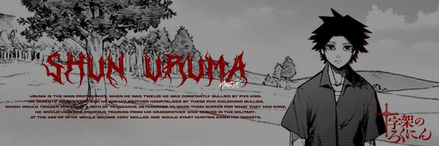
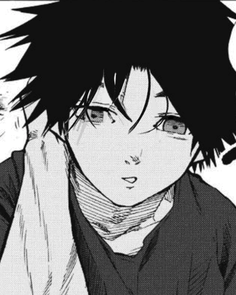
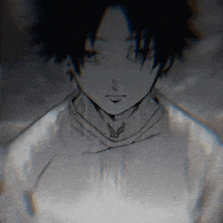

Shun era uma criança tranquila e carinhosa. Ele amava muito seu irmão mais novo, Kakeru, e sua família. Porém, aos 12 anos, sua vida virou um inferno quando passou a ser perseguido por cinco colegas, liderados por Kyou Shigoku. Eles chamavam Shun de “Sujeito Experimental A” e praticavam bullying extremamente cruel contra ele.

Depois da tragédia com sua família, seu avô Noboru Uruma decidiu treiná-lo pessoalmente. O avô tinha
experiência militar e conhecia métodos de combate muito avançados.
Durante anos, Shun foi submetido a um treinamento extremamente pesado, envolvendo:
💪 Condicionamento físico — força, resistência e velocidade.
🥊 Combate corpo a corpo — golpes, esquivas, imobilizações e contra-ataques.
🔪 Uso de armas — aprendizado para lutar e sobreviver contra adversários armados.
🧠 Controle mental — aprender a permanecer calmo mesmo sob pressão extrema.
👁️ Observação e estratégia — analisar rapidamente os movimentos e fraquezas dos inimigos.
🏃 Sobrevivência — aprender a continuar lutando mesmo ferido ou em situações desfavoráveis.
O treinamento não era simplesmente para deixar Shun forte. Noboru queria prepará-lo para enfrentar pessoas
realmente perigosas e sobreviver.
Com o passar dos anos, Shun desenvolveu reflexos, força e técnicas de combate muito superiores aos de uma
pessoa comum. Foi assim que nasceu o Uruma que aparece na história, muito diferente do garoto que sofria
bullying.
